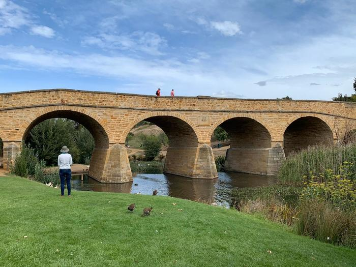

観る
島の約37％が国立公園や自然保護区に指定されており、美しく広大な景色が広がっています。
タスマニアデビルやウォンバット、カンガルーなどにも出会えます。
- 


タスマニア島は、オーストラリア本土の南東部に浮かぶ北海道ほどのサイズの小さな島です。
島の4割が国立公園や自然保護区に指定されており、
タスマニア・デビルをはじめ、ウォンバットやペンギンなどの貴重な動物が生息していいます。
メルボルンから飛行機で1時間。
留学を通じて実感した自然豊かで穏やかな街の魅力をお伝えします。
島の約37％が国立公園や自然保護区に指定されており、美しく広大な景色が広がっています。
タスマニアデビルやウォンバット、カンガルーなどにも出会えます。
土日に開催されるマーケットや、朝市では、新鮮な野菜や果物、魚介類やワインが並び、
多くの現地の人々が訪れます。州都であるホバートを少し離れると入植時代の街並みを感じることができます。
毎週土曜に開催され、300店以上の露店が
アート、工芸品、食材、ワインなどを販売して
います。現地の人が多く買い物に集まります。

映画『魔女の宅急便』のモデルになったと
言われているパン屋。周囲には古いニレ並木や
19世紀初頭の家々が残っています。

午前8時半にFarm Bellが鳴って始まる。採れ
たてのオーガニック野菜や伝統的な手法
で作られたバターなど乳製品が販売されている。
州都ホバートは英国人が最初に上陸したシドニーに次ぎ、二番目に古い都市といわれています。
シドニーやメルボルンなどの大都市と違い、あまり開発が行われていないタスマニア
の各地には植民時代を偲ばせる建築物が200年近くの時を経て、今でも数多く残っています。
タスマン国立公園内にあり、高さ63.9m、天井までの
高さが海抜52.7mという巨大なアーチ型の断層。
かつて国内最大級の流刑植民地があった場所で、
2010年にユネスコの世界遺産に「オーストラリアの
囚人遺跡群」の1つとして登録されました。

大富豪デイヴィッド・ウォルシュが創設した
私設の美術館。「大人のディズニー」と呼ばれて
おり、斬新な展示物がたくさん並んでいます。

季節が逆になっているから急な温度変化
による体調不良に気をつけよう。夏は
サングラスや日焼け止めを忘れないようにしよう。

オーストラリア固有の動植物の生体環境を守るため、
検疫が厳しくなっています。
持ち込める食品を予め確認しよう。

日本はA形プラグ、オーストラリアはO形プラグ
を使っている。変換アダプターが必要なので
忘れずに持っていこう。